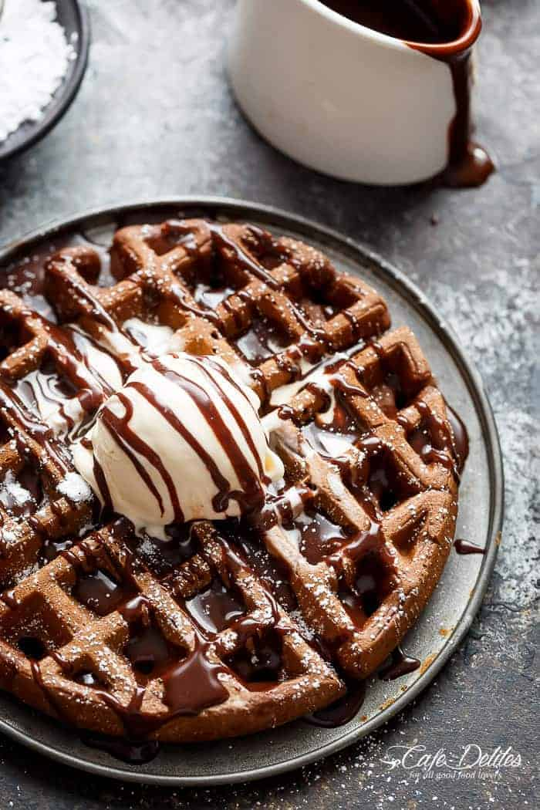

Classic Waffles

About
Ingredients
2 cups all-purpose flour
1 teaspoon salt
4 teaspoons baking powder
2 tablespoons white sugar
2 eggs
1 ½ cups warm milk
⅓ cup butter, melted
1 teaspoon vanilla extract